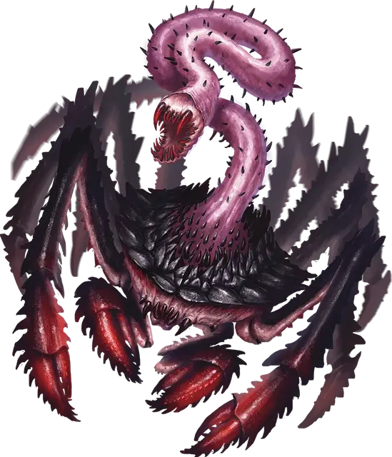

Стремительная змеиная пасть
Scuttling Serpentmaw
Маленькая Аберрация, без мировоззрения

Класс Доспеха 17 (природный доспех)
Хиты 65 (10к6 + 30)
Скорость 30 футов
| мод | спас | ||
|---|---|---|---|
| СИЛ | 16 | +3 | +3 |
| ЛОВ | 14 | +2 | +2 |
| ТЕЛ | 16 | +3 | +3 |
| мод | спас | ||
|---|---|---|---|
| ИНТ | 3 | −4 | −4 |
| МДР | 11 | +0 | +0 |
| ХАР | 3 | −4 | −4 |
Навыки Скрытность +6
Чувства слепое зрение 60 футов (слеп за его пределами), пассивное Восприятие 10
Опасность 4 (1100 опыта)
Бонус мастерства +2
Особенности
Амфибия. Змеиная пасть может дышать и воздухом и под водой.
Тактика стаи. Змеиная пасть совершает с преимуществом броски атаки по существу, если как минимум один союзник змеиной пасти находится в пределах 5 футов от этого существа, и этот союзник дееспособен.
Действия
Мультиатака. Змеиная пасть совершает одну атаку Укусом и две атаки Когтями.
Укус. . Рукопашная атака оружием: +5 к попаданию, досягаемость 15 футов, одна цель. Попадание: 10 (2к6 + 3) колющего урона или 17 (4к6 + 3) колющего урона, если змеиная пасть совершала бросок атаки с преимуществом.
Коготь. . Рукопашная атака оружием: +5 к попаданию, досягаемость 5 футов, одна цель. Попадание: 7 (1к8 + 3) рубящего урона.
Описание
Стремительная змеиная пасть похожа на необычайно большого краба с гладким черным панцирем. Он скрывается в расщелинах и глубоких подводных ущельях. Будучи замеченным, он бросается к своей добыче и демонстрирует свою самую грозную особенность: бронированную пасть, скрытую на спине панциря. Этот змеевидный придаток может высовываться из панциря, чтобы вонзиться в добычу.
Хотя змеиные пасти обитают в воде, они не умеют плавать. Они передвигаются по морскому дну небольшими группами, работая вместе, чтобы разрывать на части гораздо более крупных существ, с которыми они сталкиваются.